Begin with a working gesture.
The first prototypes tested the basic relation between a raised screen, a moving support, and a human body at the desk.
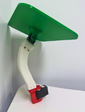
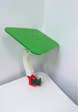
TILT brings together physical computing, robot mechanism design, and ambient interaction to make posture support feel less like a reminder and more like a responsive desk companion.
CONCEPT ORIGIN
JUN 2026
How might a laptop stand offer posture support as an ambient companion, rather than another corrective alert at the desk?
PRE-USER STUDY
Four appearance directions were explored before engineering the final product. Open an individual concept, or reveal the full comparison at once.
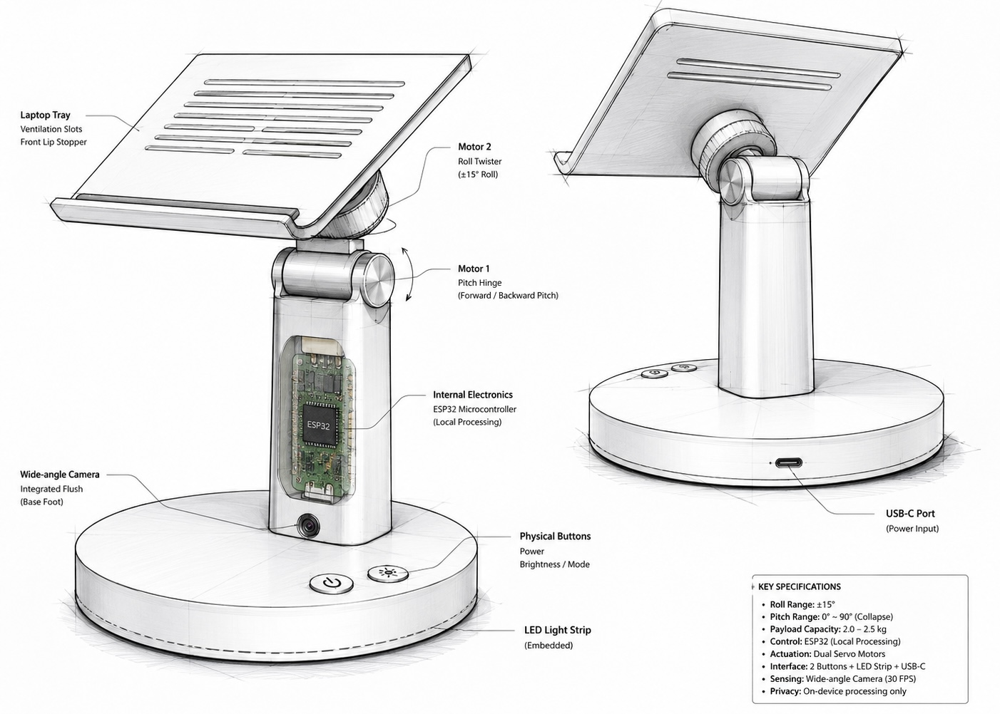
Metaphor A direct, technology-first laptop stand.
Intent No decorative appearance: clear, straightforward, and visibly functional.
User feedback Traditional and easy to understand, but too ordinary to feel engaging.
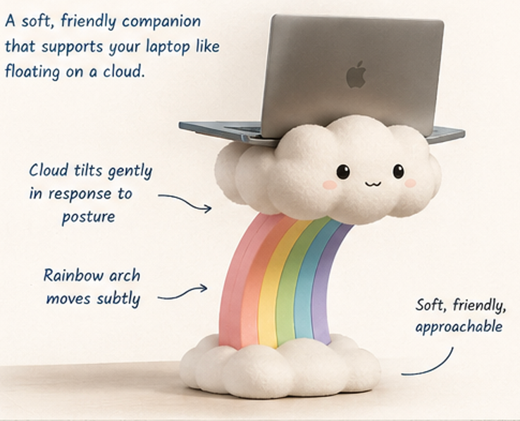
Metaphor Working in the clouds: lightness, ease, and a small moment of rainbow optimism.
Intent A playful reference to cloud-based work and Hong Kong’s colourful local character.
User feedback Users found it cute, but not compelling enough; the rainbow risked becoming distracting.
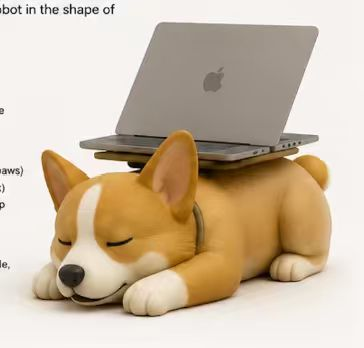
Metaphor A dog as a person’s best friend: attentive, warm, and always nearby.
Intent Three friendly, expressive motions would communicate TILT’s three interaction modes.
User feedback The concept felt too cute, which made it less visually appealing as a desk product.
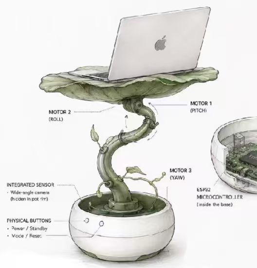
Metaphor Plants are alive and responsive—like people. Their vitality creates a calm, restorative presence.
Intent The compact plant form supports an ambient office environment without demanding space or attention.
User feedback Users preferred the gentle, living quality of the lotus; the final design strengthened its physical stability.
Use a plant metaphor to frame posture feedback as gentle support through movement, rather than a command or alert.
THE JOURNEY
The first prototypes tested the basic relation between a raised screen, a moving support, and a human body at the desk.


Three focused studies brought the physical system into a compact, ergonomic, and maintainable form. Expand each study to see the full evidence.
Five stem configurations showed that a compact three-motor solution could improve ergonomic fit without raising the laptop too far above the desk.
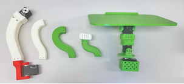
Camera-angle tests balanced a clear view of the upper body with a compact placement that could live naturally inside the product.
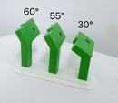
Electronics were gradually reorganised so the wiring, motors, and boards could stay contained within the base without compromising maintainability.
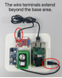
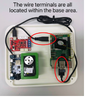
Colour exploration considered user preference alongside the project’s lotus-and-water inspiration, pairing a soft green top plate with a calm blue base.
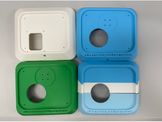
The final version brings the leaf-shaped platform, low-profile water-blue base, three-axis motion, and sensing hardware into one coherent product.
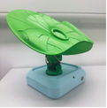
FUTURE WORK & UPDATES
This page will keep growing with new CAD drawings, prototype iterations, user-study findings, videos, and competition updates. Please return to see what TILT becomes next.